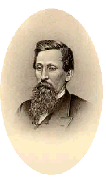

With a war brewing, discourse on the conflict at hand soon became a
crucible for the world of politics. Political leaders were bound to
the fate of the soldier-- as both were in turn bound to the the pulse of
the community of Chambersburg.
The soldier, hundreds of miles away,
remained at the heart of political discussion in the Valley Spirit
and the Franklin Repository throughout the course of the war.
So, what was the nature of this discussion? The two papers, being so
clearly affiliated with political parties, found themselves embroiled
in heated debate about local, state, and national politics.
Col. Frederick Stumbaugh-- who led the
77th at Shiloh, recieved the sword of Col. Battle in surrender there, and
went on to lead the 5th Brigade in Gen. Alexander McCook's Division-- was
the closest thing to a "living war legend" in Chambersburg. He was nudged
into local politics upon his retirement from the army, his accolades and
service speaking for his natural abilities-- even to the Franklin
Repository, which had always referred to him as the "former
Democrat."
The Repository supported Stumbaugh for
office when he returned from the war.....